Roupas e Cosplays de Hatsune Miku
Moda Inspirada em Hatsune Miku
Hatsune Miku influenciou muitas linhas de moda com sua estética futurista. Existem peças de roupas, como camisetas, jaquetas e acessórios, que são oficialmente licenciados pela Crypton Future Media. Além disso, muitas marcas independentes criam linhas inspiradas na personagem.
- Camisetas: Com estampas icônicas de Miku, frequentemente apresentando suas cores características: azul, verde e preto.
- Jaquetas: Inspiradas em seu estilo futurista, muitas vezes com detalhes em neon e tecidos metálicos.
- Colaborações de Moda: Marcas famosas como Puma, Uniqlo e até designers de moda de alta costura já lançaram coleções com referências à Hatsune Miku.
- Variações de Roupa: Hatsune Miku tem uma vasta gama de figurinos em jogos, shows e eventos. Desde o seu visual original, com a saia plissada e botas longas, até visuais temáticos como a Racing Miku, com um traje esportivo inspirado em corridas, ou a Snow Miku, que aparece todos os anos em colaboração com o festival de inverno em Sapporo.
camisetas
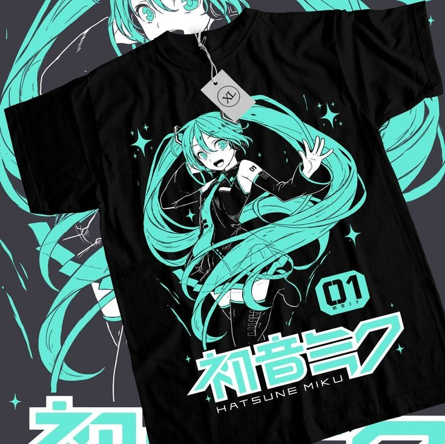
Jaquetas
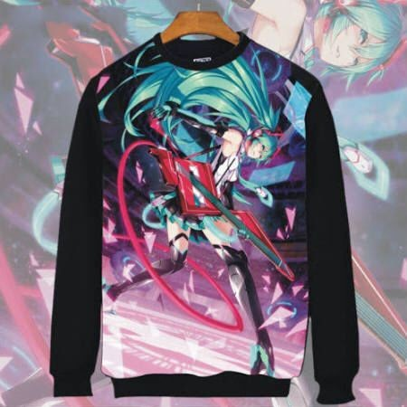
Colaborações de moda
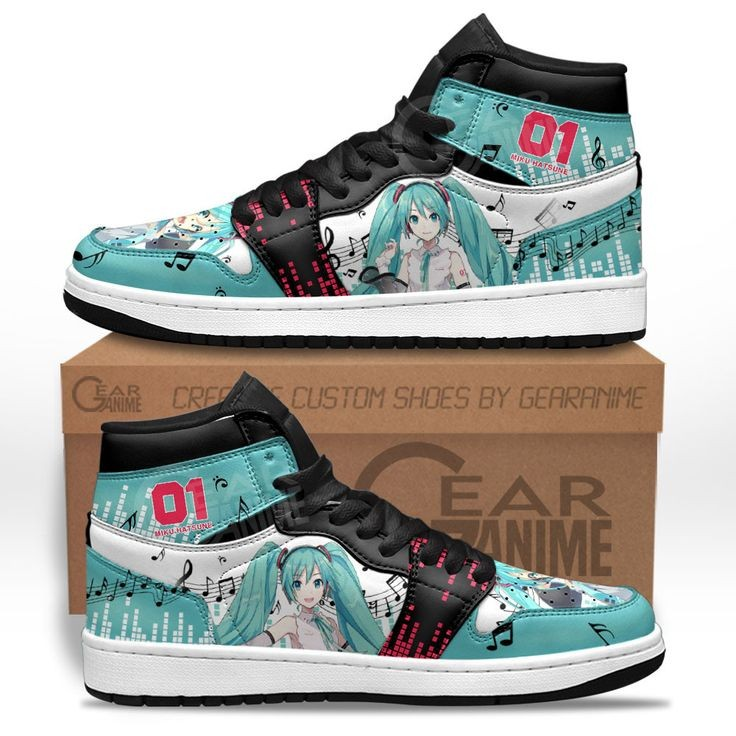
Variações de roupas

Cosplays de Hatsune Miku
O cosplay de Hatsune Miku é um dos mais populares em convenções ao redor do mundo. Com o passar dos anos, Miku ganhou muitos trajes alternativos que são recriados por fãs dedicados. Alguns dos cosplays mais elaborados envolvem designs especiais, como a Racing Miku, que mistura tecnologia e velocidade, ou a Snow Miku, que varia de ano para ano com diferentes elementos de inverno.
O cosplay de Miku pode variar desde o visual clássico, com suas longas meias pretas e saia plissada cinza, até versões mais extravagantes, como Miku em trajes de colaboração com marcas ou outros eventos. Muitos cosplayers personalizam seus trajes, criando versões alternativas e criativas.
Alguns cosplayers
 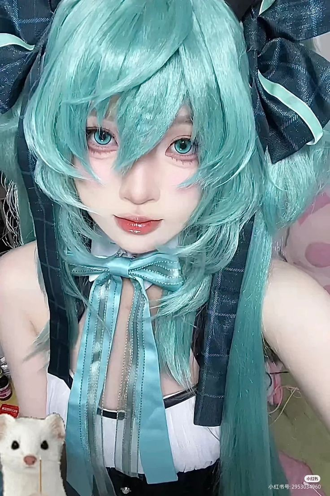
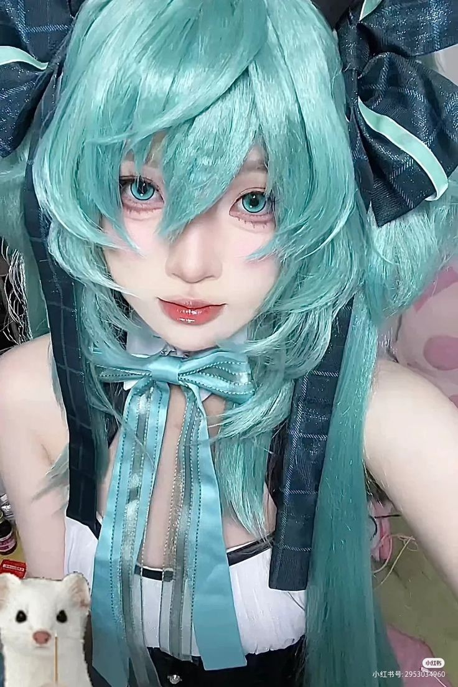
Estilos Criativos de Cosplay
- Perucas de papel: Algumas versões de cosplay utilizam perucas feitas inteiramente de papel, recriando os longos cabelos azulados de Miku de forma inovadora e artística.
- Hijabs: Em comunidades muçulmanas, cosplayers criaram versões de Hatsune Miku com hijabs, combinando a cultura pop com tradição religiosa, o que resultou em um belo exemplo de inclusão e adaptação.
- Perucas cintilantes: Outra variação popular são as perucas feitas com fibras cintilantes, que brilham sob a luz, dando a Miku um visual futurista ainda mais destacado, especialmente em eventos noturnos ou shows ao vivo.
- Cosplays de eventos: Cosplayers também recriam trajes que Miku veste em eventos especiais, como o "Magical Mirai", que sempre traz novos designs temáticos, ou mesmo o visual de "Snow Miku", em que ela aparece com trajes de inverno.
Perucas de papel
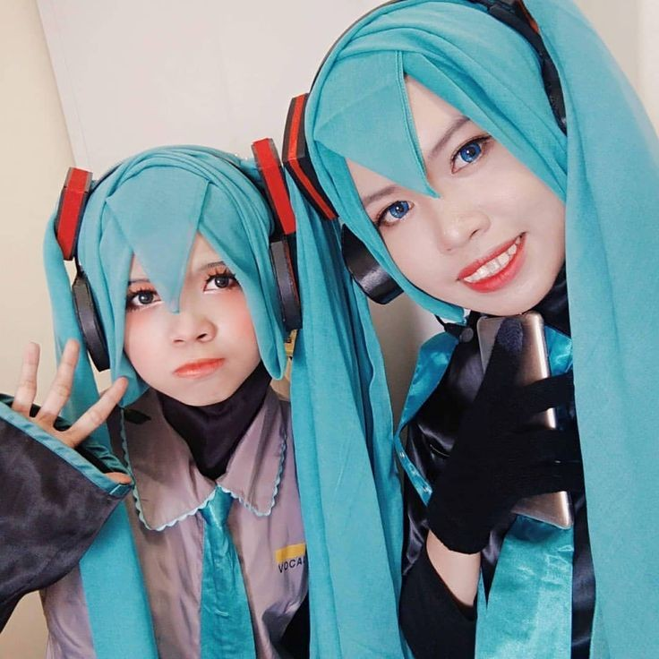
Hijabs
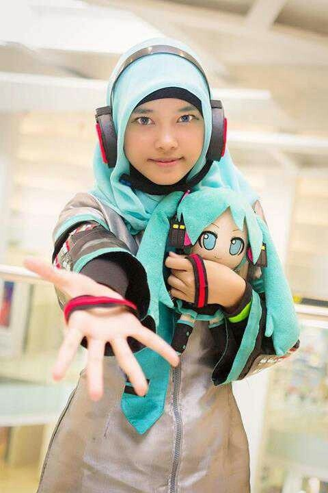
Perucas cintilantes
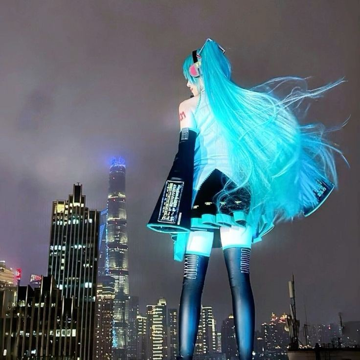
Cosplay de eventos
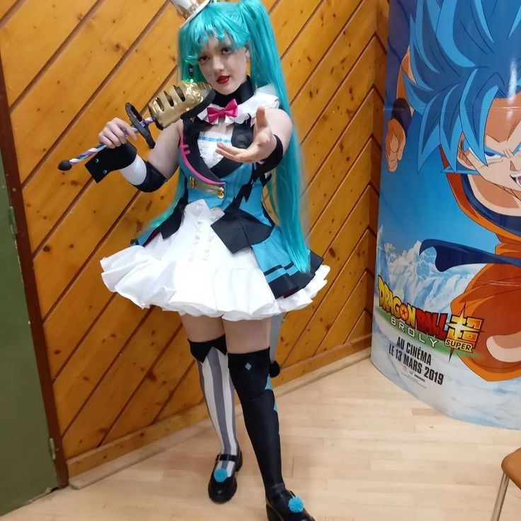
Cosplays Alternativos e Customizações
Além dos trajes convencionais, alguns cosplayers levam a criatividade ao limite, criando versões alternativas e adaptadas de Hatsune Miku, incorporando diferentes culturas, estilos e materiais. Alguns exemplos incluem:
- Miku Steampunk: Combina o visual futurista de Miku com elementos clássicos da era vitoriana, como engrenagens e trajes metálicos.
- Miku Cyberpunk: Trajes baseados em neon e elementos tecnológicos, que amplificam a estética futurista da personagem.
- Miku Tradicional Japonesa: Uma combinação da estética moderna da Miku com o estilo tradicional japonês, usando kimonos e acessórios tradicionais.
Miku Steampunk
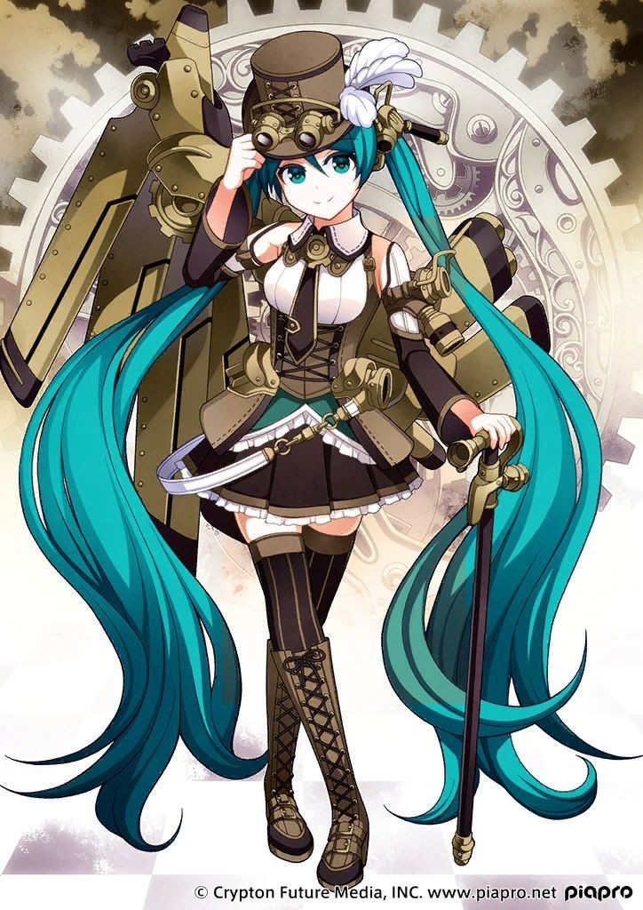
Miku Cyberpunk
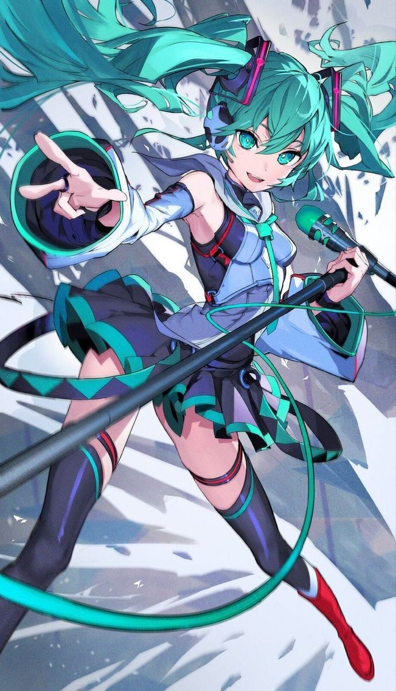
Miku Tradicional Japonesa
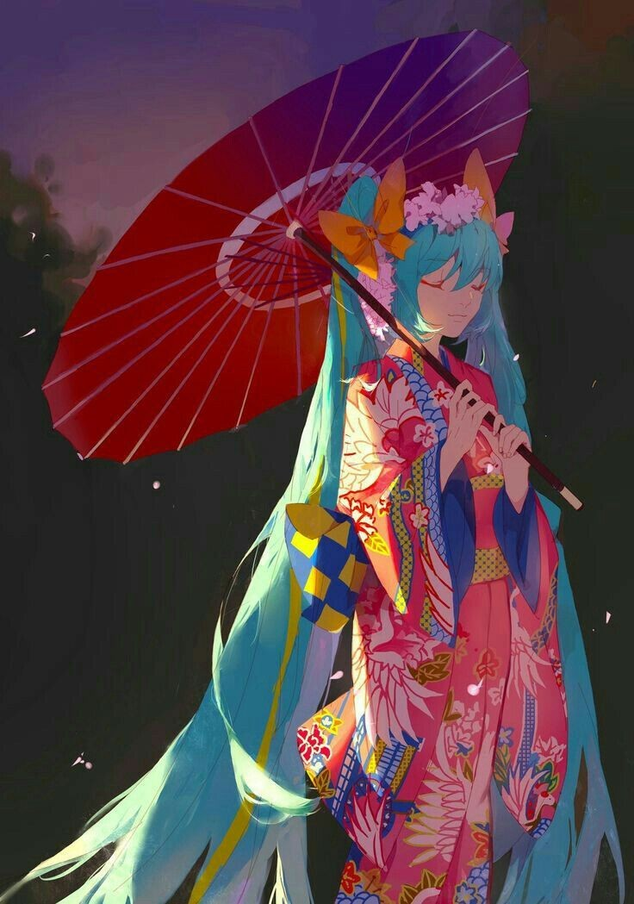
Essas variações mostram como a comunidade cosplay usa a personagem como uma tela em branco para explorar novas ideias e influências culturais.